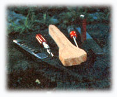
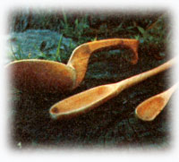
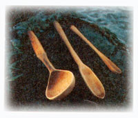

There's something special about handmade wooden spoons, some quality that lifts them head-and-shoulders above the cheap imported utensils which line the shelves of discount supermarkets. Perhaps the value of these carefully crafted cooking and eating tools stems from the bond that they create between the carver who shapes the wood and the generations of cooks who will dip and stir with it. Unfortunately, such fine hardwood kitchen utensils are hard to come by in this day and age.
To bridge this "supply gap", I've been making wooden spoons at home for the past few years. I got my start at the craft when I carved a scoop for one Kathleen Alatalo ... before she became Kathleen Arten.
At the time I didn't plan to make more than the single crude (though heartfelt) gift. And, once I'd decided to attempt that first project, I pawed through my dad's scrap lumber pile and found a piece of hard maple-about 18" long, 4" wide, and 1-1/2" thick-which seemed to have a spoon inside just waitin' to be carved. In order to try to "second guess" the hunk of lumber, I drew a narrow oval bowl and a tapered handle on one side of the board, and a slightly different spoon on another of its surfaces. Then I chose the shape that best "fit" the maple's grain ... and started to work on it.
Of course, my initial wood carvin' experience produced a stove-top tool that was far from perfect ... with a knife slip here, a rough rasp mark there, and so forth. In fact, now and then I think about redoin' that original spoon ... but I always wind up decidin' against it. After all, the thing works well enough, and It's kind of a monument to my apprenticeship at this "hobby". I'll never make those same mistakes again (and, after readin' this article, you shouldn't have to make'em at all).
A supply of hardwood (I use red oak and maple) is, of course, the first requirement for spoon carvin'. You should be able to scrounge all of this lumber that you'll need from high school and college shop classes, furniture factories, or local lumberyards. These outfits often discard "spoon-sized" scraps, so they're not likely to charge you for 'em. At least, I've never had to pay for my materials.
You'll also need a few basic tools ... though how many you require will depend upon your talent and patience. I use a wood rasp, a good pocketknife (it must take and hold a keen edge), an X-Acto handle with a replaceable gouge blade coarse and fine sand paper, and a handsaw. The latter isn't absolutely necessary, but it sure comes in handy once in a while.
Sometimes the idea of puttin' tools to wood can be more intimidating than the actual job ever will. Because of this, I've found it best to just "jump right in". You should, however, draw a "pattern" or two on your piece of board (let the grain and color of the wood do most of the design work for you). And don't expect the sketch to be just like your finished product . . . the shape will change as the spoon "comes out" of the lumber.
After you've sketched your design, saw any excess wood from either side of the handle and cut the corners from the "dipper" portion of the block of wood to bring the rough spoon's bowl closer to its eventual oval shape. Be sure to leave plenty of space to allow for errors or changes of plan. (In fact, if there isn't much extra material around your pattern, skip this "roughing out" step completely.) You now should have something that looks like a miniature canoe paddle. So far, so good.
Now pick up your rasp and use it, carefully, to round the spoon's handle and shape the outside of its bowl. This is the most tedious part of the entire operation, and you'll probably be tempted to use a blade to remove large areas of wood in a hurry. Don't. Instead, stop often, have a look at your spoon-to-be, and remember that a fast" knife doesn't offer nearly as many second chances as that good of "slow" rasp.
Before long you'll find yourself working on the transition point between your spoon's bowl and handle . . . the really ticklish part of the project. I usually get nervous when I start to shape this compound curve, fiddle around, and-finally-do something that looks like total ruination (such as, maybe, cut too sharp a shoulder between handle and bowl, or carve the stem" too thin). Out of these disasters, though, comes the spoon's final shape. It was in there all along.
Once you have the outline of your scoop nearly finished, you can start to dig out its cavity. Use the gouge to cut the wood away, but leave plenty of material all the way around . . . a spoon with a hole in its bowl will have to be alibied into a stirring stick or a fork!
As soon as your project is correctly shaped, you can start to sand it . . . first with coarse paper, and later with a finer grit. This will be a pleasant task, because sandpaper does noticeably improve the appearance of a "roughedout" carving.
After you've sanded the utensil's surface until it's "smooth as a baby's bottom", wash the spoon (or put it through a cycle in the dishwasher), and let it dry completely. If that makes the wood's grain "raise" enough to feel rough again, give the spoon another rub-down with your fine-grained sandpaper. Finally, oil the scoop with plain old salad oil, and it's ready to use!
It takes me about three days to finish a spoon, but I put in my time in dribs and drabs, and I don't know exactly how many hours each dipper requires. I have thought, now and again, of tryin' to turn a profit with my woodwork, but I don't have the space that such a large-scale operation would require. Besides, I only pick up my tools when the mood strikes me. I guess I'd like to keep it that way.
On the other hand, I do believe that a do-it-yourselfer with modest skills (and a jigsaw or bandsaw) could make good money if he turned out a line of standard (but classy) spoons . . . to sell at art fairs and in craft and gift shops.
And, though I'm not makin' any cash with my spoons, I still find this moody, low-technology occupation to be indirectly profitable.
You see, wooden spoons make great gifts. Most wives, sisters, mothers-in-law, bridesmaids, friends who cook, etc., are pleased to receive 'em . . . and then tend to reciprocate by doin' nice things for me!
Just think: You can spend those long winter evenings on the homestead (or in the apartment) makin' cost-free presents for your sister's nuptials in July, or for your mom's June anniversary. And, once the family's gifts are taken care of, you can stockpile enough samples of your personal handicraft to "open up shop" in the spring.
Of course, you might also want to make a few spoons to keep for yourself . . . and that's fine, too. You can use 'em in the kitchen for years and years, and then pass the "just broken in" utensils along to your grandchildren.
So. Why not carve a spoon or two? You just might start a family tradition!
Almost the only thing I know for sure about the large hook-handled spoon-which appears in the photo that accompanies this article-is that it's one of our family's treasures.
My dad claims (with a glint in his eye) that the dipper "came over from Norway-steerage class-ridin' in a steamer trunk, shivered with apprehension on Ellis Island, and then homesteaded in Wisconsin".
Mom's story is probably closer to the truth (though not as exciting as Dad's). She believes that the fine old spoon was hand carved long ago by some ancestor on the family farm . . . "during the winter when there wasn't so much to do".
But two pieces of information about the utensil are pretty definite: It is more than 100 years old, and it was handed down from mother to daughter on my father's side of the family.
That wooden ladle has received good care from all the cooks who've used it, too. Despite its age, it sees action every day . . . and still serves up a mean bowl of hot chili.
Besides that, when I take the old spoon down from the wall-to oil or just admire it-I can see the faint blemishes left by my ancestor's tools, and I can sense the feel that that oldtime carver put into his or her work. Which, of course, gives me a standard to aim for, whenever I make one of my own wooden spoons.
|
 |
 |
 |